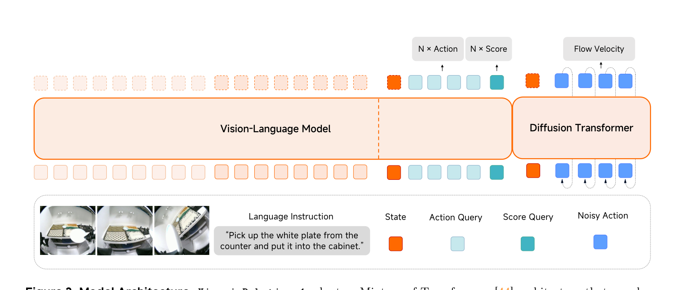
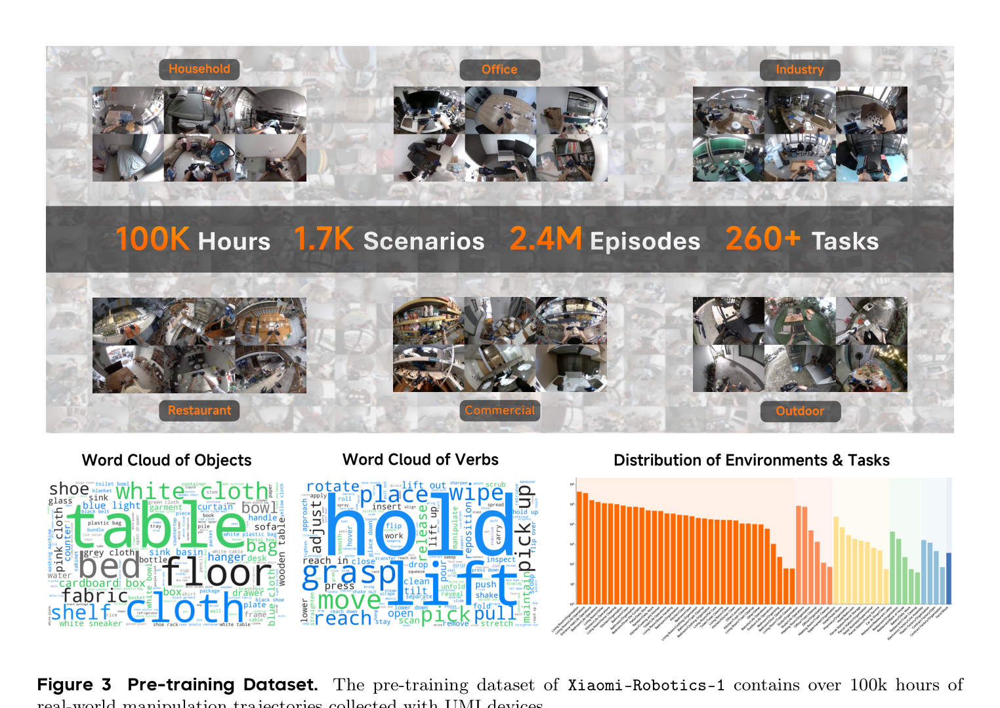
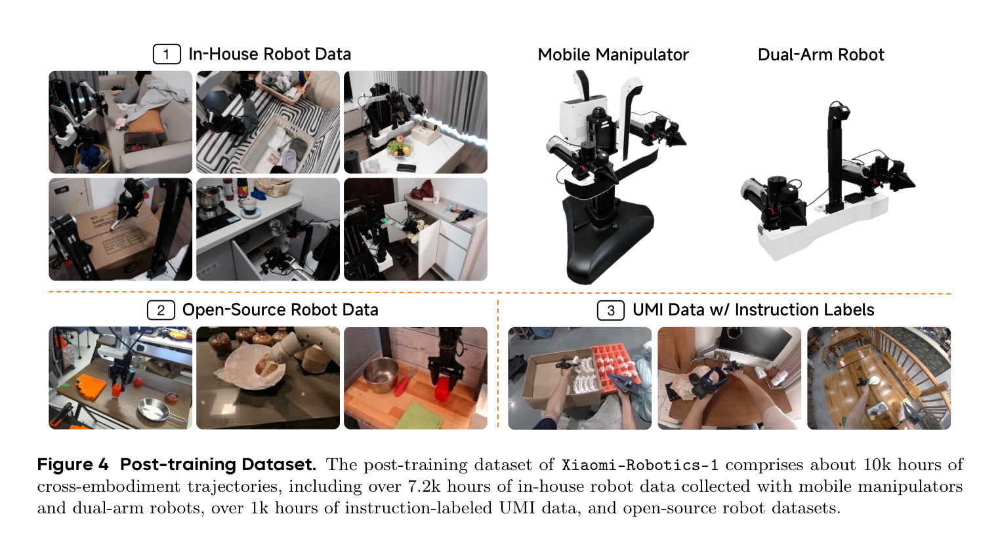
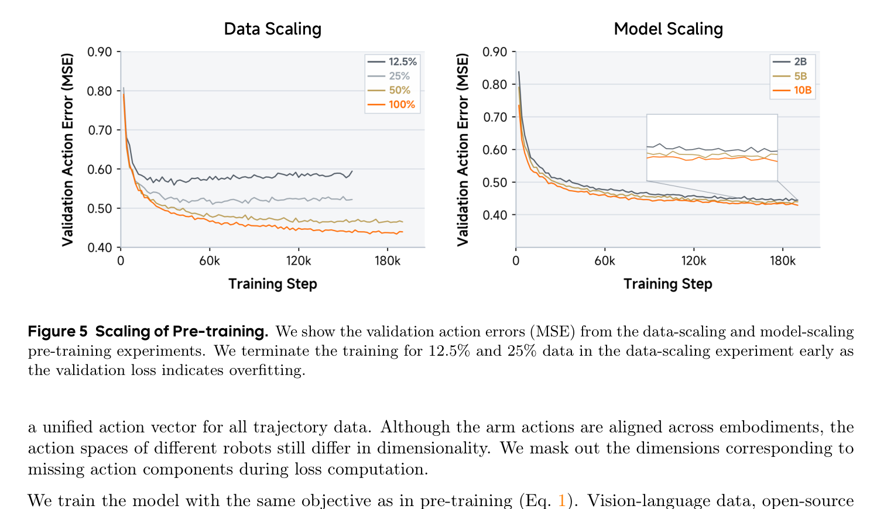
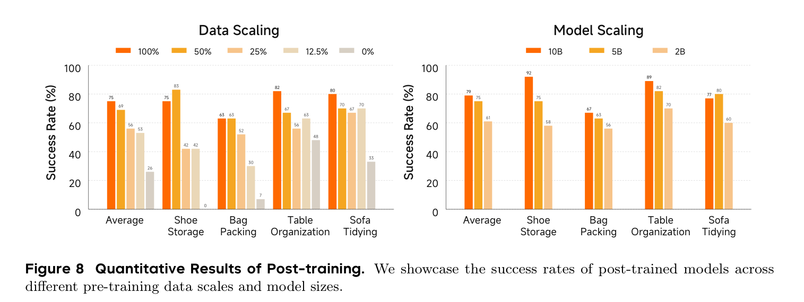
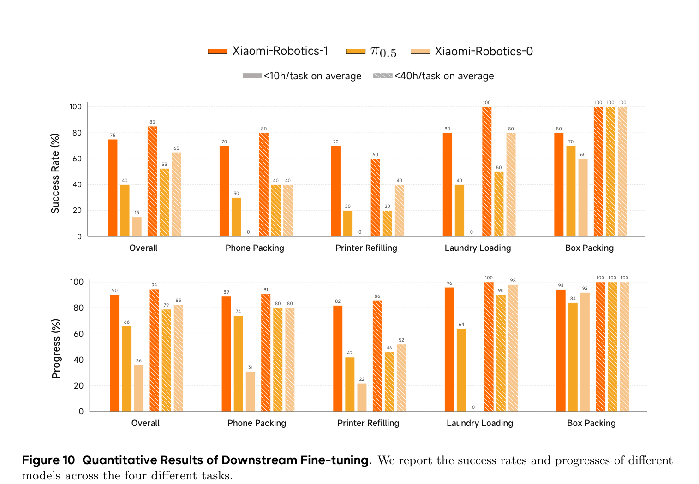

Paper Deep Dive · VLA · UMI Scaling
Xiaomi-Robotics-1：10 万小时 UMI 数据如何变成可部署的 VLA
这篇工作的重点不是发明一个更复杂的机器人 policy，而是验证一条可扩展的数据路线：先用不依赖具体机器人本体的 UMI 轨迹学习“如何让场景发生目标变化”，再用约 1 万小时跨本体数据，把这种动作先验对齐到真实机器人和人类指令。
0. 一句话结论 #
Xiaomi-Robotics-1 用 10 万小时 UMI 轨迹加自动生成的 state-transition caption 做 embodiment-free 动作预训练，再用约 1 万小时跨本体数据完成动作空间与语言指令对齐；它证明了更大数据和模型能稳定降低 action error，并把收益迁移到真机成功率，但代价是巨大的私有数据与算力，且目前代码和权重尚未公开。
核心不是“UMI 数据很多”这一句，而是把无边界、无任务标签的长轨迹改写成一个可监督问题：给定当前观测和一段场景状态变化描述，预测能实现该变化的动作 chunk。这使 UMI 数据从 demonstration collection 变成了 action pre-training corpus。
1. 论文定位：它是 VLA，不是显式 World Model #
模型学习的是条件动作分布，而不是未来视频或显式状态转移模型：
输入是当前多视角观测 $o_t$、语言 $l$ 和机器人本体状态 $s_t$，输出是长度为 $H$ 的连续动作 chunk。它不先预测未来图像，所以与 Fast-WAM、ABot-M0.5、Cosmos Policy 一类“视频/世界动力学参与 action readout”的路线不同；它更接近 $\pi_0/\pi_{0.5}$：用预训练 VLM 提供视觉语言表征，再让 flow policy 生成连续动作。
| 路线 | 中间对象 | 主要数据优势 | 主要风险 |
|---|---|---|---|
| Xiaomi-Robotics-1 | VLM KV cache + noisy action | UMI 轨迹直接监督动作生成 | 没有显式未来验证与长期记忆 |
| 典型 VLA | 视觉语言 token + action head | 可复用 VLM 语义知识 | 动作数据仍是瓶颈 |
| 典型 WAM | 未来视频/latent state + action | 可利用视频动力学先验 | 生成开销、未来误差和 train-test mismatch |
2. 方法总览：两阶段数据对齐，一套 MoT policy #
Pre-training
100K h UMI video + gripper pose
-> fixed-length clip segmentation
-> Qwen3.5-27B captions scene-state transitions
-> Qwen3-VL encodes video + transition text
-> Choice Policy predicts K action candidates (auxiliary)
-> action DiT predicts UMI action chunk by flow matching
Post-training
7.2K h in-house robots + 1K h instruction-labeled UMI + open robot data
-> canonical end-effector frame + unified action vector + missing-dim mask
-> replace transition description with imperative instruction
-> same VLM + DiT objective
-> executable arm / gripper / base / waist action chunk
模型提供 2B、5B、10B 三个规模。三者的 VLM/DiT 层数分别为 28/36/36；总参数量约 2.6B、5.1B、10.5B。DiT 与 VLM 层数一致，但 hidden size 更小，目的是把主要语义计算留在 VLM，把动作去噪控制在可部署成本内。
3. 三个真正重要的设计 #
3.1 State-transition caption：把“做什么”改写成“世界变成什么”
旧方法为什么不行：10 万小时长轨迹无法人工逐段切分、命名任务；直接用固定任务 ID 又会丢掉对象、方向和中间状态的细粒度信息。
它怎么改：先等长切 clip，再用 Qwen3.5-27B 描述夹爪和交互物体在片段内发生的状态变化，例如“冰箱门被打开后关闭，塑料袋被移入冰箱”。生产者线程负责 CPU 切片并写入内存文件系统，消费者线程维持数百个 caption 请求并发；论文称整个 10 万小时语料约两周完成标注。
为什么有效：transition caption 同时描述起点、终点和被操作对象，是 action chunk 的弱 goal specification。它不要求标注者知道高层任务边界，却能让策略学习“如何从当前场景走向目标变化”。
代价与限制：固定长度切片可能把一个语义动作截断，也可能包含多个并行变化；VLM caption 的遗漏和幻觉会直接变成条件噪声。论文没有报告 caption 审核准确率、过滤阈值或不同 clip 长度的消融，均属于【不确定】。可通过抽样人工标注、动作可恢复率和 clip-length ablation 验证。

3.2 动作对齐：统一的是坐标语义，不只是维度
对手臂动作，论文使用相对当前末端位姿的 delta：
这里 $T_t\in SE(3)$ 是当前末端在 base frame 下的位姿，$\hat T_{t+i}$ 是未来目标位姿。矩阵乘法先把未来位姿拉回当前末端局部坐标系，因此“沿夹爪前方移动”在不同机器人上拥有一致数值含义。团队进一步统一所有 UMI 与机器人末端坐标轴方向；base 用速度，waist 用位置相对增量。不同本体没有的 action dimension 用 loss mask 去掉。
机制：一个统一向量解决张量接口，canonical EE frame 解决动作语义，missing-dimension mask 解决监督合法性。三者缺一不可。只 padding 维度而不统一 frame，会让相同数字对应不同物理方向，模型会在本体之间收到冲突梯度。

3.3 Choice Policy 是训练脚手架，不能成为 DiT 捷径
VLM 末尾追加 state token、$K$ 个 action query 和 $K$ 个 score query。第 $k$ 个 action query 回归候选 chunk $\hat a^k$，score query 预测它与真值的 L1 距离：
Winner-takes-all 允许多模态动作分布由多个候选分担，而 score head 学会判断哪个候选更接近 demonstration。这个辅助任务把 VLM 表征推向 action-relevant feature，帮助 DiT 收敛。
关键细节是：DiT 的 cross-attention 看不到 action query 和 score query 对应的 KV cache。论文观察到若保留这些 token，DiT 会复制 VLM 已经生成的动作，形成 shortcut，反而削弱视觉语言 grounding。训练辅助头提供 representation shaping，但不能泄漏答案给最终生成器。
4. 训练与推理：一个 flow policy，两个语言分布 #
动作 flow matching
训练时把真值动作与高斯噪声线性插值：
论文从 $u\sim\mathrm{Beta}(1.5,1)$ 采样，再令 $\tau=(1-u)\times0.999$，提高高噪声区域的采样权重。$ au$ 通过 adaLN 注入 DiT。推理从高斯噪声开始，用 5 次 Euler 更新恢复 clean action，步长固定为 $0.2$：
两阶段总损失
$\mathcal L_{\mathrm{NTP}}$ 来自额外视觉语言数据，用于维持 Qwen3-VL 的通用能力。预训练时 VL:UMI 采样比为 1:9；post-training 时 VL、开源机器人、instruction-UMI、自采机器人比例为 0.5:0.5:0.5:8.5。也就是说，后训练仍保留 5% 视觉语言 rehearsal，但 85% batch 来自高质量自采真机数据。
吞吐工程
VLM token 在 batch 内 pack 成一条变长序列，只做一次前向。由于 VLM 比 DiT 贵，每个样本同时采 4 个 flow timestep；对应的 4 份 noisy action 被 pack 后一次通过 DiT，并共享已计算的 VLM KV cache。这是典型的“摊薄条件编码成本”：一次看图，训练四个噪声层级。
5. 关键张量与实现映射 #
| 符号 | 实现对象 | 典型形状 | 作用 |
|---|---|---|---|
| $o_t$ | 多视角图像/短视频 token | $[B,N_v,N_{img},d_{vlm}]$ | 当前视觉上下文 |
| $l$ | transition caption 或 instruction token | $[B,N_l,d_{vlm}]$ | 定义目标变化/任务 |
| $s_t$ | proprio MLP token | $[B,1,d_{vlm}]$ | 当前本体状态 |
| $a_{t:t+H}$ | 统一连续动作 chunk | $[B,H+1,D_a]$ | arm/gripper/base/waist 控制 |
| $\tilde a^\tau$ | 加入 flow noise 的动作 | $[B,H+1,D_a]$ | DiT 输入 |
| VLM KV cache | language + observation KV | 每层 $[B,N_{ctx},d]$ | 为 DiT 提供条件 |
| $\hat a^k,\hat s_k$ | Choice Policy 输出 | $[B,K,H+1,D_a]$ / $[B,K]$ | 训练期辅助动作监督 |
| action mask | 本体维度有效位 | $[B,1,D_a]$ | 屏蔽不存在的执行器 |
【不确定】论文没有公布 $H$、控制频率、$D_a$、相机数量/分辨率、$K$、动作归一化范围和旋转参数化方式。上表形状是从公式推导出的接口，不是官方超参。验证方式有三种：等待配置公开；从 checkpoint config 读取；在推理代码中检查 action tokenizer、dataset transform 与 control loop。
6. 训练-推理对齐检查 #
| 不一致点 | 论文如何处理 | 仍然存在的风险 |
|---|---|---|
| transition 描述 → imperative instruction | 1K+ 小时人工 instruction UMI + 7.2K+ 小时真机做 post-training | 两种语言分布的语义粒度未必一致 |
| UMI gripper → robot embodiment | canonical EE frame、统一 action vector、缺失维度 mask | 动力学、延迟、夹爪结构差异仍未显式建模 |
| 训练真值 action → 推理噪声 ODE | flow matching 覆盖不同噪声强度，推理固定 5 步 Euler | 5 步误差与 action chunk 闭环漂移缺少消融 |
| 单帧当前观测 → 长程任务 | action chunk 与 post-training 长任务数据 | RoboDojo 明确未使用 history，memory 维度较弱 |
| VLM 辅助动作 → DiT 最终动作 | 屏蔽 action-related KV，避免直接复制 | 辅助头与 DiT 梯度竞争的权重消融未给出 |
7. 实验复盘：证据很强，但“scaling law”仍应谨慎使用 #
7.1 真正被验证的是 20K 小时子集上的单调 scaling
数据 scaling 用 5B 模型，在约 20K 小时 UMI 上取 12.5%、25%、50%、100%；模型 scaling 用 2B、5B、10B，都训练同一份 20K 小时数据。随着数据和参数增加，validation action MSE 下降；小数据设置后期过拟合，大数据设置仍持续下降。

重要限定：总语料是 100K+ 小时，但受算力预算限制，论文的可控 scaling 曲线只使用约 20K 小时。它证明“在这个区间单调变好”，还没有拟合出可外推的 power law，也没有给出 20K→100K 的严格同配方对照。因此更准确的表述是 scaling behavior，而不是已经建立完整 scaling law。
7.2 预训练收益确实迁移到了真机
同一 5B post-training 配方下，无 action pre-training 的 Qwen3-VL 初始化平均成功率为 26%；使用 20K UMI 的 12.5% 即升到 53%，100% 达到 75%。模型规模从 2B→5B→10B 时，平均成功率从 61%→75%→79%。测试任务在 post-training 中出现过，但环境和物体实例未见，因此它证明的是 object/environment OOD，而不是完全 novel-task zero-shot。

7.3 下游 few-hour adaptation 有说服力，但试验次数偏少
四个全新任务合计只用 36 小时（平均每任务 <10h）时，Xiaomi-Robotics-1 达到 75% success / 90% progress；$\pi_{0.5}$ 为 40% / 66%。144 小时设置达到 85% success。优点是任务包含双臂手机装箱、可变形纸张补充、长程洗衣和多物体装箱；不足是每任务只评估 10 次，置信区间会很宽。

7.4 仿真 benchmark 很强，但不是纯 backbone 公平赛
| Benchmark | Xiaomi-Robotics-1 | 第二名/关键对照 | 读法 |
|---|---|---|---|
| RoboCasa | 74.5% | World2Act 72.6% | 小幅领先 |
| RoboCasa365 | 57.4% | ABot-M0.6 46.6% | Composite-Unseen 32.1% 是主要亮点 |
| VLABench | SR 59.1 / PS 70.3 / IS 69.9 | ERVLA 的 IS 70.4 更高 | 成功与进度第一，意图分数不是第一 |
| RoboDojo | 论文表中 avg score 20.07 | 第二名 13.07 | 未使用历史观测，memory 维度仍较弱 |
VLABench 使用了 ERVLA 风格 CoT 标签，并以 50% 概率联合 next-token CoT loss；不同 benchmark 也各自 fine-tune 官方数据。因此这些结果证明 foundation initialization 对下游训练有价值，但不能简单归因于 UMI pre-training 一个变量。
版本差异：2026-07-16 的项目页写 RoboCasa365 57.4、RoboDojo 13.93；PDF 摘要写 57.6、20.07，而 PDF Table 3 写 57.4。本文以 PDF 表格与正文为主。RoboDojo 项目本身发布时间晚于本文引用链，数字可能来自持续更新的 leaderboard；最终应以作者后续勘误或代码评测脚本为准。
8. 可复现清单：现在能确定什么，缺什么 #
| 部分 | 论文已给出 | 仍缺失 |
|---|---|---|
| Backbone | Qwen3-VL + 同层数小 hidden DiT；2.6B/5.1B/10.5B | 具体 checkpoint、视觉帧采样与 projector |
| Flow | Beta(1.5,1)、$\tau\le0.999$、adaLN、5-step Euler | action normalization、rotation representation、CFG/EMA |
| Loss | Flow + Choice Regression + 0.1 NTP | $K$、各 action 维度权重、mask 细节 |
| Pre-train mix | VL:UMI = 1:9；每样本 4 个 flow timestep | batch size、LR、optimizer、warmup、训练 compute |
| Post-train mix | 0.5:0.5:0.5:8.5 | 每个来源的采样温度与重复率 |
| Action interface | relative EE delta、base velocity、waist delta、missing-dim mask | 控制频率、chunk horizon、执行窗口、replan 频率 |
| Label pipeline | 固定切片、Qwen3.5-27B、producer-consumer、约两周 | prompt、clip length、质量过滤、人工审计结果 |
代码状态（核对日期 2026-07-17）：官方 GitHub 只有 README 与论文 PDF，README 明确写着 code/model weights “will be released soon”。因此当前无法用代码确认 tensor shape、训练超参、异步 fine-tuning 或真机 control loop；博客中未把论文外推断伪装成代码事实。
9. 可以继续往哪里改 #
| 改动点 | 预期收益 | 风险 | 验证实验 |
|---|---|---|---|
| 固定切片改为 change-point segmentation | caption 与原子动作边界更一致 | 切分器误差造成数据偏置 | 固定长度 vs 光流/夹爪事件/语义边界 |
| caption 加可验证结构槽位 | 减少 VLM 幻觉，支持对象/状态审计 | 语言表达变窄 | 自由文本 vs object-state JSON vs 双通道条件 |
| 加入短历史或压缩 memory | 改善长程状态依赖与 RoboDojo memory | 延迟与 context 成本上升 | 单帧、4帧、事件 memory 的同预算比较 |
| canonical action + embodiment token | 同时保留共享动作语义和硬件差异 | 模型可能走 embodiment shortcut | 新机器人 leave-one-embodiment-out transfer |
| 把 transition goal 接到 latent world state | 在执行前检查动作是否能实现目标变化 | 引入 WAM 推理成本与误差 | 纯 VLA、latent goal critic、video rollout 三档闭环 |
对 WAM 数据设计最值得拿走的东西 #
这篇论文对 WAM 最有价值的不是 MoT 架构，而是 transition-centered data unit。如果数据清洗只保存“视频 + 原始动作 + 高层任务名”，一个 episode 内大量局部变化没有独立监督；Xiaomi-Robotics-1 的做法提醒我们，每个训练窗口都应尽量带有：
start observation
+ state transition / local goal
+ canonicalized action chunk
+ embodiment-valid mask
+ quality / idle / contact flags
+ end observation (WAM 可额外使用)对于 WAM，还可以把 transition caption 同时作为 action 条件和未来 latent 的语义验收条件：未来预测不仅要视觉相似，还要真的完成“门打开、物体进入、夹爪释放”这些可验证状态变化。
10. 速读备忘卡 #
- 模型是 VLA flow policy，不显式预测未来视频。
- 预训练数据：100K+ 小时 UMI，1.7K 场景，2.4M episodes，260+ tasks。
- 自动标注把固定长度 clip 变成 state-transition conditioned action learning。
- post-training 约 10K 小时，其中 7.2K+ 小时为自采真机，1K+ 为 instruction UMI。
- 动作跨本体对齐依赖 canonical EE frame、统一向量和 missing-dim mask。
- Qwen3-VL 提供语义 KV cache，DiT 用 flow matching 生成 action chunk。
- Choice Policy 用 K 个候选辅助训练 VLM，但其 action token 不给 DiT 看。
- 推理为 5-step Euler；训练每个样本共享 VLM cache 采 4 个 flow timestep。
- 可控 scaling 实验用约 20K 小时子集，不等于完整验证 100K scaling law。
- 真机收益主要证明未见环境/物体泛化，不是完全未见任务 zero-shot。
- RoboCasa365 为 57.4%，Composite-Unseen 32.1%；VLABench 的 intention score 不是第一。
- 截至 2026-07-17，代码和权重尚未发布，完整复现仍需等待。